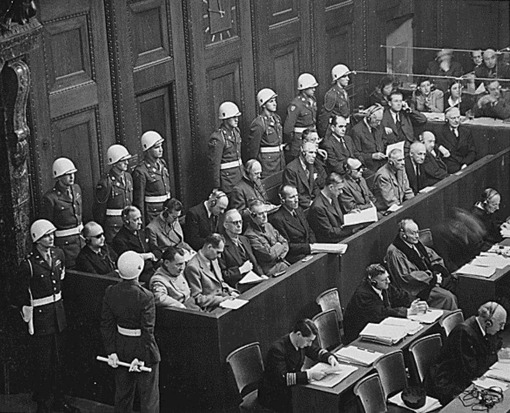
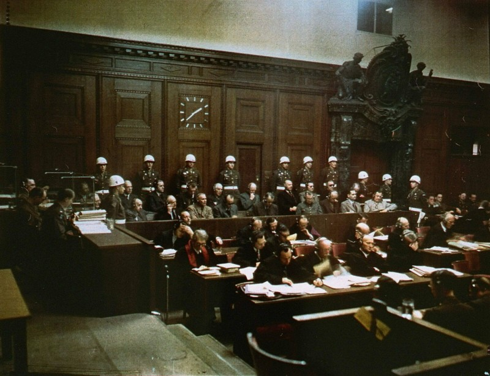
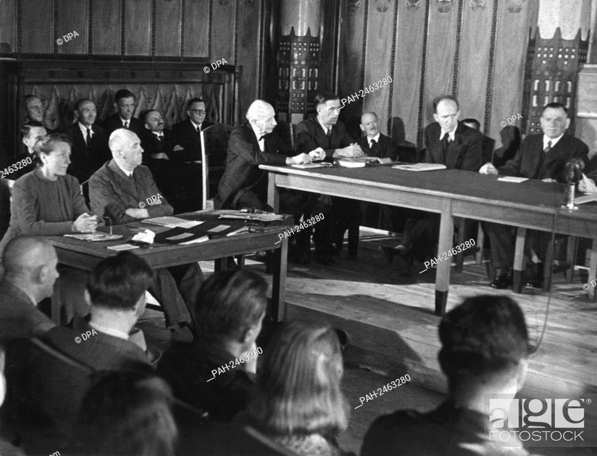

After the end of the war in Germany, in May of 1945, the Allied Powers France, the UK, the US, and the Soviet Union divided Germany into four occupation zones and started the process of
denazification
demilitarization
decentralization
democratization
also referred to as the 4Ds

To denazification the country, NSDAP (the Nazi party) and all sub-organizations were banned, its laws were abolished, and all signs of the Third Reich were erased from everyday life, including books, uniforms, medals, and street names.

Germany also had to make reparation payments to the Victorious powers and other affected countries that were mainly paid in Machinery manufacturing plants and forced labor.
Most Germans were also subject to investigations by the International Military Tribunal that was looking to identify the different roles people played in the Holocaust and in committing war crimes.

Germans were divided into five categories, from major offenders to exonerated individuals. Major offenders were tried in the first Nuremberg Trial from November 1945 to October 1946 and in 12 subsequent Nuremberg trials that were solely held by the U.S. Of all 36 defendants were sentenced to death, 125 received prison sentences, 23 of them for life, not all of these verdicts were actually executed though a lot of the convicts ended up being released after just a few years and pardoned from the death penalty as the denazification process became more and more lenient in the western zones.

Due to the extremely high number of cases, less severe offenders were soon handed over to civilian tribunals in Bayreuth under German Administration, and it became increasingly difficult to find a balance between punishment and rebuilding the country for which the occupying Powers needed to fill a lot of important positions and having hundreds of thousands of Germans in internment camps didn't make that easy.

But with the development of the Cold War, West Germany was considered to become an important Ally. The focus quickly started shifting away from strict denazification and more toward Rehabilitation.
By 1948 countless trials were seized or never started, and lots of people were pardoned. This, to this day, is heavily criticized as it meant that people that used to be active members of the Nazi party ended up keeping their high-ranking jobs and remaining in positions of power in the newly founded West German Republic.
In the Soviet occupation zone, denazification was followed through a lot more strictly and quickly. By the Spring of 1948, they had fired and replaced over 500,000 people.
For the first two decades after the war: Silence (wasn’t talked about at all) (Heidegger?!) as the country was full of people who were actively involved in the crimes of the Third Reich. Most of them weren't willing to face their own guilt, let alone take responsibility for their actions, and their families often preferred staying in the dark about how badly their own spouse's parents and grandparents were really involved in being a part of the Third Reich. The same thing applied to schools many of the teachers were formally involved with the Nazis, and the details of the Third Reich were barely part of the curriculum.
It wasn't really until the 1960s that young adults in Germany started demanding their Elders to take responsibility for their past and to start an open public dialogue some of this was part of the 1968 student movements in West Germany that arose parallel to protests all over the world.
At the time, the outrage was partly triggered by different events that had taken place throughout the 60s, including the so-called Swastika Epidemic, the Eichmann Trial, the Frankfurt Auschwitz trial, the debate about the imminent statute of limitations of NS crimes (Verjährungsdebatte), and the election of a former Nazi party member Kurt Georg Kiesinger as Chancellor.


As a result, West Germans finally started owning up to their country's past more intensely in the 70s and 80s.
Nazi Germany and the Holocaust became a mandatory part of school curriculums. TV shows like the American mini-series Holocaust which about a third of the population watched on German TV, prompted people to reflect on the brutality of the genocide of 6 million European Jews and the emotional stories of the victims.
Other notable Productions of the time are the German war film „Das Boot” as well as the French documentary „Shoah.”

Today Germany practices an active culture of remembrance it’s all about taking responsibility for our country's devastating actions of the past and making sure that something like that can and will never happen again.
Today Germany practices an active culture of remembrance it’s all about taking responsibility for our country's devastating actions of the past and making sure that something like that can and will never happen again.
Adolf Hitler was born on the top floor of a yellow house in Braunau am Inn, Austria, on April 20, 1889. Authorities debated what to do with the building, which had become a neo-Nazi rallying point, for years, but on Tuesday, Austria’s interior minister announced that officials have finally come to a decision: The dictator’s birthplace will be converted into a police station.
This includes that it's actually illegal in Germany to deny or downplay the Holocaust (17 other European countries have similar laws) it’s also illegal to do the Hitler salute or use Nazi Insignia unless it's part of art science research or teaching.

This topic is a visible part of public life: many former concentration camps have been turned into Memorial sites that can be visited today to learn from the past and understand the scale of the Nazi's crimes in addition to street names, memorials, museums, and stumbling Stones commemorate the victims of the Nazi regime all over Germany.
The Stumbling Stone (Die Stolpersteine) project was started in the 90s by German artist Gunter Demnig and entails brass plates inscribed with the names and life dates of victims that are set into the pavement outside of their last known address or workplace: you’ll never know when and where you'll stumble over one which shows that deportation took place anywhere and everywhere and by bending down to read the victims names you're pretty much bowing down to them to pay them respect.

To this day, over 75,000 of those stumbling stones have been laid all over Europe, making it the world's law largest decentralized Memorial, and there are countless movies, documentaries, and books that critically deal with the Third Reich and the post-war era and that ensure that the victims of the Nazi regime aren't forgotten.
The historical responsibilities that Germany carries are deeply ingrained in German culture and politics. For example, Germany has a very unique relationship with Israel. In the late 50s and early 60s, they signed contracts with Israel with the Jewish claims conference and 12 European countries regarding compensation to victims of the Nazi regime, some of which are being paid up to today.
Compared to the U.S., most Germans don't really have a very pronounced sense of patriotism, with the exception of sporting events like the soccer World Cup. For example, there are not a lot of German flags, not even in schools and other public buildings, unless they’re government institutions, and there's no such thing as the American Pledge of Allegiance, and the German National Anthem is only sung on a small number of occasions (also interesting to compare to Germany leading up to the Industrial Revolution (think: Grimm brothers: Cinderella, Rumpelstiltskin, Snow White, Friedrich List’s National System) and the Bismarck era (think: War w/ Denmark, Austria, France)
-Elementary school to a gymnasium (important to note because the school system and the curriculums in Germany differ from state to state -or to the US)
-ca. 30 Jahre alt
Friedrich (the friendship between a non-Jewish boy and his Jewish neighbor throughout the Third Reich)
Die Welle (school experiment about the Third Reich) a Schachnovelle by Stefan Zweig,
„Andorra", „Homo Faber" by the Swiss author Max Frisch
Also talked about it in religion, ethics, arts, and music classes:
Learned about what the Nazis classified as Degenerate art, „Entartete Kunst,” context of Arts interpretations, analyzed the musical and lyrical features of Nazi propaganda songs.
English sociology and geology: z.B.
-Weimar Republic World War II and post-war Germany
-Went to the Concentration Camp Dachau outside of Munich (mandatory at school)
-Resistance group of the ‘Weiße Rose’ (located in Munich)

-A lot of focus on the suffering of the Jews and the cruelness and inhumane treatments
-A lot about Nazi propaganda and the political-economic, and cultural factors that made WWII and the Holocaust even possible and that led people to believe in such an awful ideology
-Not learning a lot about who Hitler was as a person and the details of the war and warfare